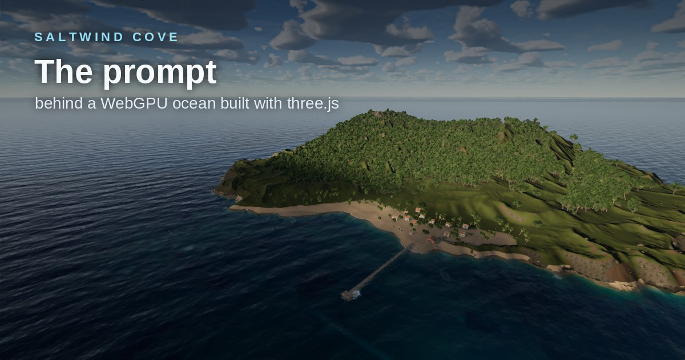

Saltwind Cove
The prompt
A WebGPU ocean you can walk, swim, sail and dive in, built with three.js from the prompt below, exactly as it was sent: the brief first, then a long run of follow-up requests and fixes.

Prompt
2,255 words- i want you to build me an ocean simulation with three.js. this should be the best AAA experience you can deliver. your goal is Unreal level graphics and capabilities. - 3 cascade FFT ocean with realistic ocean waves and dynamics. i want to be able to simulate calm seas and choppy waves. waves should look realistic with no tiling. - seamless air->water transition. when coming out of water, i want droplets to form and roll away. - underwater caustics - all the bells and whistles of ocean rendering. reflection, refraction, subsurface scattering, broadband backscatter, beer's law attenuation, etc. and any I missed to make this look cinematic quality. - shoreline simulation with waves that properly respond to the decreasing depth, roll over, crash and create foam and sea spray. - beach wetness - leading edge of water should lap up on shore, rounded with contact normals and shadows. - water should lap up on beach, foam advects, then fades into ground and leaves wetness. - i want a complete wake simulation that is integrated with the shoreline simulation - i want a boat i can drive around that has realistic physics and bow spray - build a little fishing village and pier where the boat is docked. - i want to walk around beach in first person view, then be able to go up to boat and get into it and switch between either 1st person view or 3rd person view - i want a dynamic sky with physically-based coloration and volumetric clouds - aces filmic tonemapping - ambient occlusion, shadows, etc. - underwater reef i can get in water and swim around and explore (need transition from walking on beach to swimming) - underwater fog - when look at waterline, i want to see nice shader for edge of water that looks like i'm looking through edge of glass, nice rounded normal - sun glints on the water surface - persistent foam generated by wave compression. foam should look realistic. - build a beautiful UI that let's me adjust wave parameters, sun position and other options. your goal is to achieve the most realistic water simulation in the browser. identify any other features i may have missed and make sure you implement them. optimize performance wherever possible. this needs to be performant and run in a browser environment, so choose resolutions, poly counts, and texture sizes accordingly. target is 60fps. use webgpu and TSL for this. - feel free to seek out whatever references and research you need to implement this. - i want you to iterate on this and continually refine it against your references until it is perfect. - also, if you determine that that there is a better option that a 3 cascade FFT for simulation the best ocean possible, please do that. i didn't mean to presribee 3 cascade FFT as a requirement. - show FPS in upper-left on demo. - also remove html body margin. - refraction issues. something not right. - caustics are flickering. - make sure to capture additional views from wherever you need to to verify AAA quality. - caustics are just noise. - terrain needs massive improvement. need better textures, better tesselation, more organic features, realistic trees and bushes and grass with wind sway, ambient occlusion, shadows, vignette, etc. - caustics need to be rewritten from ground up. start over. find something better. its weird streaks / artifacts. i can see the edge of the finit area it is given. - add proper pbr textures and fine normal/rougness detail to village. some textures look quite weak and not realistic. - shoreline waves need a ton of work. need actual rolling crest with sheets ocming down and spray. use realistic particle spray and foam that gets pushed up the beach. seeings tons of bright flickering spots all over the place. caustics look much better but should follow wave activity. seem too intense and not very realistic. remembe ri wanted AAA caustic.s - performance is starting to suffer. making sure you are optimizing as you go. don't let it get away from you. - make sure to implement things that really sell the water like irregular dark patches, particles, world-placed patches of foam and streaks like you see in real-water. clouds are also a bit pixelated and need improving. ned ambient occlusion. - needs anti aliasing, shadows are really week. - Keep iterating on the breaking waves and foam washing up on shore. getting stretched out. also the volumetric clouds need work. cirrus and stratocumulus clouds are just small patches. look cartoony. find a more realistic way to do them that spans more of the sky. -for the crashing waves, think of where particles should spawn, how they should spawn, what they should look like, how particles should look, how lighting works. make sure they couple nicely into the water washing up on shore. ambient occlusion is also creating some issues with the fishing net. things are a bit blurry overall. - fish models need work. iterate on models and improve modeling. - waterline shadow looks weird. - for crashing waves, looks like foam is rolling up the inside of the curl from the bottom up before the wave actually crashes down. - fix the air/water transition. it isn't seamless right now. i'm seeing splitting between the surface and the underwater fog. there should be some clipping distance between camera and the clip plane that slices the water. when i am above water surface, the region between camera and clippign plane should be removed.after clip plane, the region above the water surface should be rendererd normally, and region below should be rendered as underwater. when camera is underwater and looking up, same thing with clip plane. render sky normally, render underwater as underwater. yo'ull need to do some tricky things with depth testing and tracking front/back faces in order to get all of the information needed to implement this properly. - add little creatures. birds, little things walking on the beach that scamper / fade away when you get close, fish in the water swimming around. - improve boat cockpit. there's some z-fighting issues. needs massive improvement to textures and little details to make it feel realistic. boat movement also needs work. wave movement in wake is too strong / leaving too big of a trough, doesn't have very good foam/aeration generation. - remove the distortion shadr when coming out of the water. causing entire screen to warp. - terrain should shadow on water. right now the terrain is behind the hill but the sun is casting the dock shadows onto the water at really extreme angles. - add more details around the villages. crates, rocks. add little pebbles and logs and pieces of debris on the shoreline. - this foam should not be coming up like this from the bottom of the wave. looks like a cannoli being folded. crest should crash down and then generate the foam. i also don't want spray rolling off the top of the waves. that is not hpysically accurate. this how waves work in real life. where is spray generated? how does it flow? - did you fix clouds yet? cirrus clouds still messed up. clouds are very granular looking. bases should be more low-frequency content with high frequency content towards the top. don't overdo it. cirrus / stratocumulus clouds are still messed up. should have a very broad, subtle cirrus texture across the sky. get rid of stratocumulus. - look at three.js water pro folder for how to properly model the bow spray. - water surface is flickering while moving in boat. - and more life below the water. add fish, corals, plants and a giant whale that looks incredibly realistic. - when i come out of water sky goes black now. look at three.js water pro to see how they did the waterline. - is cloud agent still ru nning? - i think we have a few too many agents running. somehave been running for 2 hours. what is their termination conditions? - how are you seeing stuff? in my browser i just see it stuck on compiling shaders. - add in a AAA lens flare as well. write a custom one instead of the three.js built-in. - whale model is missing textures. animations are very jerky. model needs a lot of refinement. - sea spray from breakers crashing also needs a lot of refinement. looks like puffs right now. - also improve cirrus cloud texture. add more global variation, make it more noisy and wispy and less like lines. - volumeric clouds need a ton of work. they look like tall marshmallows with not much detail. they should be broader, more epic, less height. - missing detail over here. rocks and coral and stuff should be more spread out. - improve shadow maps. need cascaded shadows so we can get fine detail up close and rough shadow detail far away. - clouds are grainy. - and these clouds don't have much detail. research clouds and improve your model. keep them fast. - improve palm tree trunk textures and distant trees. both look cartoony. - waves crashing still needs improvement. looks cartoony. sprites are blobs. not seeing individual spray. should have more shadowing in the churning foam regions. should look AAA unreal quality. - we had some sounds before, where did they go? - get rid of that bubble sound. - happens as i walk. - make walking sounds much more subtle. - a lot of the walking sounds sound fake. aren't there free sounds you can pull? - get rid of all synthetic sounds. like the going in and out of water sounds. - wind streaks are way too on the nose. look up reference to see how these shuld actually look. - can you break up the shoreline a bit so it isn't just one long roller? would rather see a buncho f breaking waves. don't need a major change here, just half the width of those rollers. - make waves wider. also the crests are getting way too larger, can we turn the swells down a bit? - where did audio go? - when i switch from free moving to walking, just drop me right where i am. - improve boat wake realism and spray. look at three.js water pro, there's a good implementation there for the spray, aeration and wake. don't copy it directly, i like your foam texture and stuff, but the spray could use improvement. - abmient occlusion causing weird issues with fishing net. - blend shadow maps better. hard cutoff right now. - continue to refine the whale model. still too shiny. needs more detail and bumps on it. look up a whale as reference. move whale a little closer to shore as well. - add more debris along shoreline. it should be realistic, have nice pbr shaders, fine detail. audio needs improvement. - for lods, fade in using bayer mask, don't just switch over hard. - move debris further down shoreline by about 2m. - what speical polish could you add in to really push this over the edge? what effects do we see in AAA games and films that turn something from okay to WOW - yes we need atmospheric haze and god rays! also add bounce light and motion blur. also add some subtle life in the air, very subtle tiny bits of things and screen space contact shadows. make sure you don't kill our perf budget. keep things fast and optimial. - swimming transition shouldn't be abrupt. - also seeing some artifacts, jittering in the caustics underwater. - water surface is jittering when moving around. also seeing some weird smearing in the water surface shader. - this only happens inside the boat when looking through windscreen. - fix tree canopies. - whale shaould have other smaller fish swiming around it and there should be foam churn around it as it breeches. - not seeing air particles or fog. improve cloud detail as well. - make the fish sign sway. - the hill off to the left hand side needs trees and shrubs. - need bird noises. - getting pretty bad flickering from ambient occlusion and possibly shadows inside the boat. - and in some whale noises using 3d sound effect by whale. - seeing a gap between the shallow water sim and the water lapping up on shore when waves recede. - look up how waves crash in real life. ours still look to clinical and plain. - are you writing in tsl or wgsl? - just remove the boat windows. - when i switch to walk from free, just let me drop down with gravity - fix shadows under overturned boats. - make dock lights brighter so they cast light around them. also have them hagning from chains ( you can just simualte this) so they bobble around a bit) - all lights should cast light onto scene. - also give me a flashilght i can turn on and off with a keybinding. - make cab of boat more lit up at night. - let me control sun azimuth - what's status on agents? - move these lights outside of posts towards land. - fix shinniness of trees and stuff. - let's speed up remaining work here. - whale should move flippers more. - finish it up soon. - can you get the flashlight to work underwater? - fix tiling issue here. - remove the forcing of the player to the surface of the water.